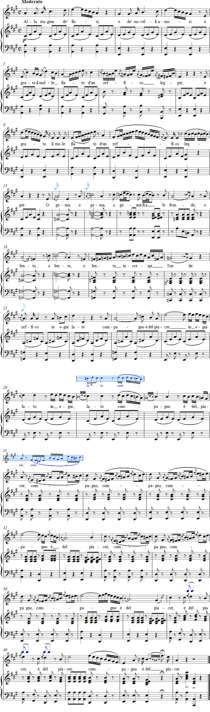

Vaccaj – Exercise 15
Listen to the recording
Sheet music

Exercise 15
Riepilogo
Recapitulation
is welcome to the season of flowers
and new loves.
Whether it blows among sprigs
or slowly bends the waves,
the west wind is a companion of
pleasure everywhere.
Performance instructions
This final exercise in the singing method is a review of everything learned. The song allows previously learned techniques to be applied in the manner of an aria.
Practice suggestions
Begin with the simplified melody in bars 1–29, singing on suitable syllables. Next, add some melodic notes in bars 11–12, 17, 21–24 and 26–28. Then combine the text with the melody and add piano accompaniment. Return to the beginning from bar 29 and let the pianist play the first bar as an interlude. Only now sing the complete score as written, imagining it as an improvisation over the melodic framework.
Try the following suggestions:
- Bars 2, 4, 6, etc.: When practising the runs, use staccato and marcato as well as legato.
- Bar 7: The musical figure is very demanding. Initially omit the last note and sing the remaining four sixteenth notes as a turn. Next, omit the grace note instead and retain the remaining four notes of the turn. Finally, sing the grace note as well. Because it precedes a group of short notes, it should be performed as a short appoggiatura.
- Bar 12: Extend the trill to fill the entire bar and end it with the notes sol and la.
- Bars 14–15: To become more confident about the difference between portamento di sotto and ordinary portamento, try "sliding" on the vowel of the upbeat.
- Bars 16–17: Do not accent the third in the mordents.
- Bars 18–19: Remember not to sing the portamento in a way that makes lento sound like le-ento.
- Bar 20: Give the first note of each of the four groups of thirty-second notes a light marcato.
- Bars 22 and 26: The long appoggiatura takes the entire duration of the principal note.
- Bars 27–28: Here, too, the "mordent" replaces the principal note and should be performed as an eighth-note triplet.
Alla stagion ends with a so-called stretta, meaning an "impressively climactic final section". A clear understanding of the underlying melody is very helpful. First sing bars 29–31 and 34–36 using the following notes:
re – sol – si – mi
mi – la – do2 – fa
fa – la – re2 – re2
Because the dotted principal note in bars 33 and 38 can be divided into three, the duration of its appoggiatura is only one-third of that note.
During practice, the tempo should be very restrained (quarter note approximately M.M. 72).
In the first part of the song, Vaccaj has, as usual, provided ample rests between phrases for breathing. By contrast, in bars 29–39 it is difficult to find a proper place to take a full breath. The singing teacher must therefore mark the breathing points; otherwise the end of the song becomes almost impossible.
Generally, one can breathe after each compagno in bars 30, 31, 35 and 36, and of course during the rest in bar 34. If necessary, a breath can be taken after the first quarter note of bar 38. According to Kohotin, it is possible to breathe in the middle of a word if the breath is combined with a syncopation.
In the final song of Metodo pratico, "soft breathing" can be applied. The first run in the second bar already requires a different kind of lightness from the slower scale at the beginning of the phrase, and without flexibility in breath pressure it is hardly possible to sing bars 7, 16 and 20, for example.
The pianist's flexibility is another prerequisite for making the song work. The pianist must be prepared to give the singer extra time in all the more difficult passages and, moreover, to "breathe along" in bars 29–39.
The best basic dynamic for study is mezzopiano.
Ideas for interpretation
Despite the high technical demands of Alla stagion, the singer should try as early as possible to relate the ornaments to the meanings of the corresponding words. Scales, appoggiaturas, "slides" and other devices must be sung so that the listener clearly understands that the singer wishes to enhance gracefully the meanings of fiori, amori, zeffiro, grato, and so on. The difficult figure in bars 29–31 and 34–36 should likewise be connected to the idea of an "embrace of the wind".
From an early stage, try to connect the phrases of thought and make the rhymes clear.
Only when the singer has more or less mastered the entire song at a calm tempo and restrained volume should they give it a somewhat more distinct character by "letting the west wind blow faster and more strongly".
However, the performance must never become so virtuosic that the composition loses its charm.
Forshufvud, G. 1994. Con lieve fiato. Lärarhandledning till Nicola Vaccajs Metodo pratico. Göteborgs universitetet.